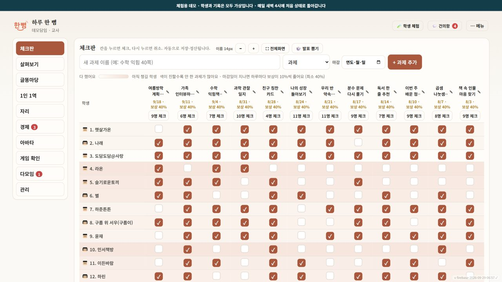
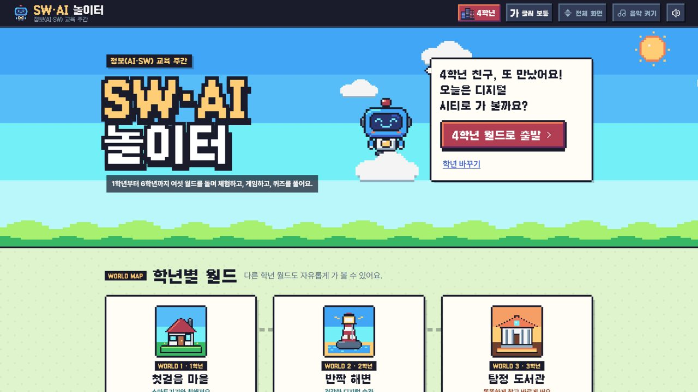
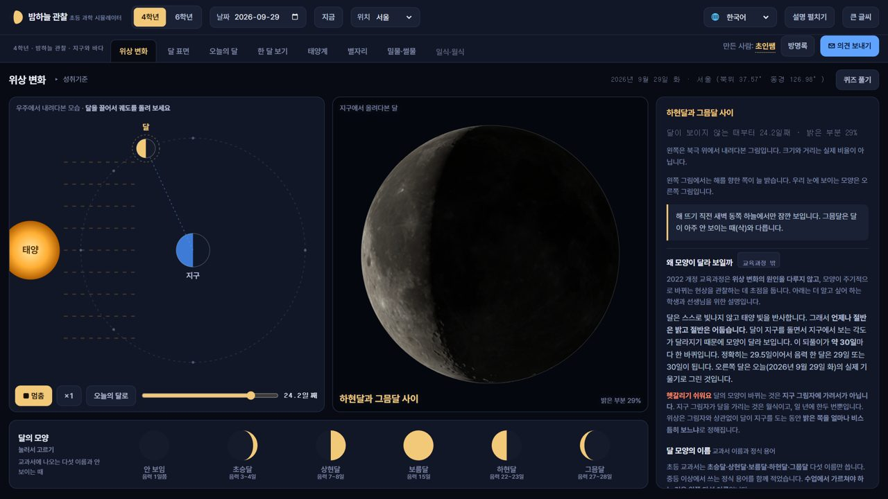
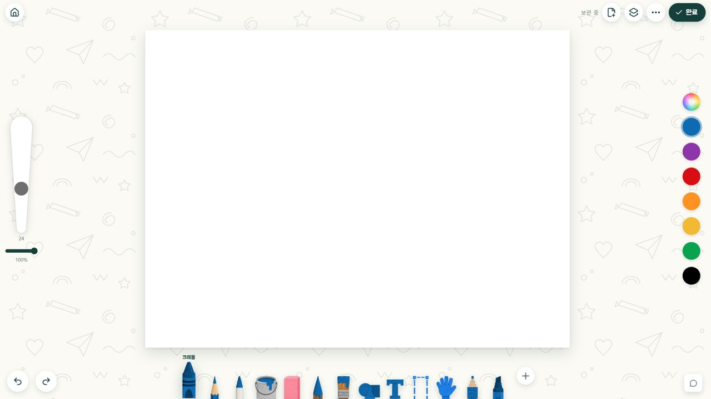
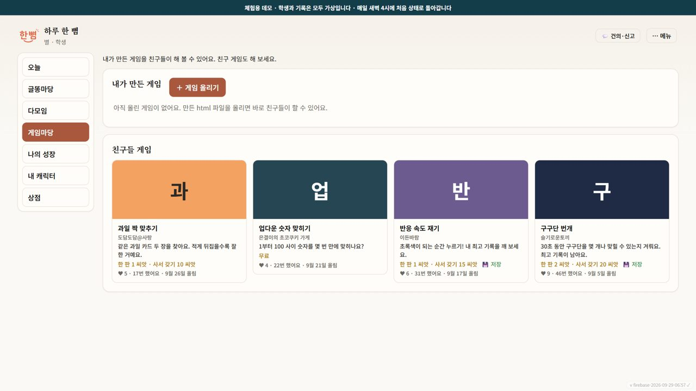
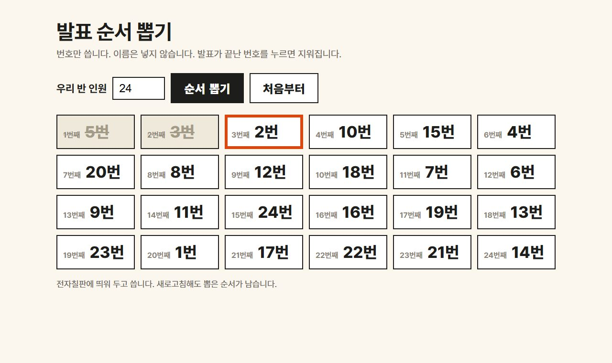
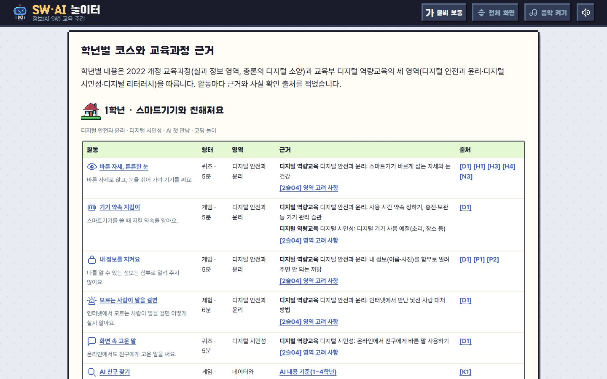

클로드 코드로 만드는
우리 반 웹앱
업무·학급운영·수업 도구를 Claude 데스크톱 앱의 Code 탭에서 대화로 만들고, 인터넷 주소로 나눕니다. 연수 중에도, 끝난 뒤에도 이 페이지를 보시면 됩니다.
00오늘의 흐름
| 시간 | 분 | 구성 | 하는 것 |
|---|---|---|---|
| 14:20 | 10 | 여는 시간 | 이 페이지 열기 |
| 14:30 | 10 | 01 클로드 코드 둘러보기 | Code 탭, 권한 모드, 미리보기 |
| 14:40 | 20 | 02 무엇을 만들까 · 업무 · 학급운영 · 수업 | 불편한 것 한 줄 적기 |
| 15:00 | 10 | 03 어떻게 만들까 · 요령과 레시피 | 레시피 하나 고르기 |
| 15:10 | 50 | 04 실습 · 만들고 배포하기 | 내 웹앱 주소 하나 |
| 16:00 | 15 | 05 나눔 | 둘러보기 · 발표 |
| 16:15 | 5 | 마무리 |
연수 전에 해 둘 것
- Claude 데스크톱 앱에서 Code 탭이 열리는지. 안 열리면 start.choinssam.com을 위에서부터 따라 하시면 됩니다.
- Vercel 커넥터 연결. claude.ai 설정 → 커넥터 → Vercel → 연결. 계정이 없으면 바로 GitHub나 이메일로 가입합니다. 한 번 연결하면 배포와 수정은 “버셀에 배포해 줘”로 Claude가 합니다.
01클로드 코드 둘러보기
지난 시간에 배운 Claude 데스크톱 앱의 세 번째 탭, Code에서 만듭니다.
질문, 글쓰기, 지난 차시의 프로젝트. 내 컴퓨터 파일은 못 만듭니다.
폴더 속 문서·자료 정리, 보고서나 표 같은 결과물.
폴더 안에 웹앱 파일을 만들고, 실행하고, 눌러 보고, 고칩니다. 오늘은 여기서.
Code 탭에서 알아 둘 여섯 곳
| 곳 | 하는 일 |
|---|---|
| 작업 폴더 | 환경 Local, Select folder로 빈 폴더를 고릅니다. 폴더 이름은 영어로(예: my-app), OneDrive 안은 피합니다 |
| + 단추 | 캡처·파일 첨부, 커넥터, / 명령 |
| 권한 모드 | 전송 단추 옆. 아래 표 |
| 모델 | Pro 기본 Opus 5.5, 생각 깊이 medium. 오늘은 그대로 |
| 미리보기 | 채팅에 나온 index.html을 누르거나 “미리보기로 열어 줘”. 만든 화면을 앱 안에서 바로 써 봅니다 |
| 바뀐 줄 | +12 −1 같은 표시를 누르면 무엇을 고쳤는지 보입니다 |
권한 모드
| 모드 | 하는 일 | 오늘 |
|---|---|---|
| Plan | 계획만 세웁니다. 파일은 건드리지 않습니다 | 첫 요청 |
| Accept edits | 파일 고치기는 묻지 않고, 명령 실행은 묻습니다 | 만들 때 |
| Manual | 고칠 때마다, 실행할 때마다 묻습니다. 처음 기본값 | 헷갈릴 때 |
| Auto | 안전한 일은 알아서, 위험해 보이는 일만 묻습니다 | 익숙해지면 |
앱 판에 따라 옛 이름(Ask permissions, Auto accept edits, Plan mode)으로 보일 수 있습니다. 근거: Claude Code 데스크톱 문서(2026-09-30 확인)
02무엇을 만들까
가장 먼저 물을 것: 무엇이 불편한가? 아래 도구는 모두 코드를 직접 쓰지 않고 대화로 만들었습니다.

과제 체크, 1인 1역, 학급 상점, 글똥마당, 건의함. “학생 데이터가 모이지 않네.”
체험판 열기 →
정보교육 주간 1~6학년. 퀴즈, 로봇 블록 코딩, 학교 코드와 QR.
열기 →
“달의 뒷면을 보고 싶은데…” 4학년 과학, 6학년 지구의 운동.
열기 →
“유료 구독 끝나서 아쉬워요!!” 수업방 코드로 작품 모으기.
열기 →
학생이 AI로 만든 HTML 게임을 반에서 올리고 함께 합니다(한뼘 안).

연수를 준비하며 만든 한 파일 앱. 오늘 실습에서 만들 크기가 이 정도입니다.
03어떻게 만들까
요청을 잘 쓰는 법보다, 맡기고 확인하고 고치는 법.
제가 실제로 쓰는 요령 여섯 가지
01 내 수준을 밝혀라
첫 줄에 “나는 코딩을 모르는 초등 교사야”라고 씁니다. AI가 전문 용어를 풀어 쓰고, 선생님이 직접 눌러야 할 것(가입, 허용 창)이 생기면 멈춰서 순서대로 알려 줍니다. 안 쓰면 영어 용어와 명령어가 설명 없이 쏟아집니다. 학년·교과까지 적으면 예시도 우리 교실에 맞춰 나옵니다.
나는 초등학교 [4]학년 담임이고 코딩을 몰라. 어려운 말은 풀어서 설명해 줘. 내가 결정해야 할 것은 충분히 이해할 수 있게 설명하고 선택지를 줘.
02 질문을 받아라
요청에 빈칸이 있으면 AI는 짐작으로 채웁니다. 만들기 전에 궁금한 것을 번호 목록으로 받고, 번호마다 한 줄씩 답합니다. 말로 답해도 됩니다. 안 하면 몇 학년인지, 몇 명인지 모른 채 만들어 다시 고쳐야 합니다.
만들기 전에 궁금한 것을 번호로 물어봐. 내가 번호 순서대로 답할게.
03 계획을 먼저 검토하라
Code 탭의 Plan 모드가 이 일을 합니다. 계획서에서 세 가지만 봅니다. 화면이 몇 개인지, 단추마다 무엇을 하는지, 기록을 어디에 저장하는지. 고칠 곳은 “다만 ~”으로 한 줄 더하고 승인합니다. 계획 먼저가 사용량도 아낍니다.
계획 좋아. 다만 [바꿀 점]은 이렇게 해 줘. 학생은 [전자칠판 / 태블릿]으로 써. 이대로 만들고, 다 만들면 미리보기로 열어 줘.
04 여러 가지 안을 먼저 받아라
디자인, 화면 배치, 앱 이름처럼 정답이 없는 것은 서로 다른 안을 3~5개 받습니다. 번호로 하나를 고르고 “2안 좋아. 다만 ~”으로 다듬습니다. 기능 목록처럼 정답이 있는 것은 한 안으로 충분합니다.
서로 다른 안을 [3]개 먼저 보여 줘. 내가 번호로 고를게.
05 예시를 제공하라
“깔끔하게”, “귀엽게”는 사람마다 다르게 읽습니다. 마음에 드는 사이트 주소, 화면 캡처, 전에 만든 내 앱을 본보기로 붙입니다. 캡처에 네모를 치고 “여기처럼”이라고 쓰면 긴 설명보다 정확합니다.
(캡처를 입력창에 끌어다 놓고) 네모 친 부분처럼 해 줘. 나머지는 그대로 둬.
06 참고할 자료를 지정하라
퀴즈나 과학 도구처럼 내용이 맞아야 하는 앱에 씁니다. 교과서 쪽수, 교육과정 원문, 공식 자료 파일을 작업 폴더에 넣고 “이 파일만 근거로”라고 씁니다. 자료에 없는 것은 지어내지 말고 물어보게 합니다.
폴더에 넣은 [교과서 파일]만 근거로 써. 없는 내용은 지어내지 말고 나한테 물어봐.
어디에나 쓰는 요청 틀
네 줄은 꼭 쓰고, 나머지는 필요할 때 한 줄씩. 무엇을 넣을지 막막하면 아래 바로 쓰는 프롬프트에서 자료를 붙여 시작하세요.
나는 [5학년 담임]이고 코딩은 몰라. [무엇]을 만들어 줘. [불편한 점] 때문에 필요해. [누가] [어디서] 써. 만들기 전에 궁금한 것을 번호로 묻고, 완성되면 어떤 모습일지 먼저 설명해 줘.
[캡처·링크]처럼 해 줘. 붙인 [자료]만 근거로 쓰고, 없는 건 지어내지 말고 물어봐. 학생 이름은 받지 않아. [바꾸면 안 되는 것]은 그대로 둬. 주제에 어울리는 서로 다른 안 [3]개를 먼저. 다 만들면 학생이 되어 써 보고, 막힌 곳은 개선해.
/goal · 목표를 주면 끝날 때까지
/goal 뒤에 끝나는 조건을 적으면, Claude가 조건을 채울 때까지 스스로 이어서 일합니다. 멈출 때는 /goal clear. Manual 모드는 계속 허락을 물으니 Auto와 함께 씁니다. 오늘 실습은 한 번씩 요청하고 확인하는 방식으로 하고, /goal은 익숙해진 뒤에 써 보세요. 근거: 공식 문서
/goal 발표 순서 뽑기 웹앱을 index.html 하나로 완성한다. 전자칠판에서 뒷자리까지 글씨가 보이고, 새로고침해도 순서가 남고, 휴대폰에서도 깨지지 않으면 끝.
P바로 쓰는 프롬프트
자료를 붙이거나 찾아오게 하고, 아이디어부터 받습니다. 선생님은 AI가 낸 안을 보고 번호로 고르고 한 줄씩 더합니다. Claude가 알아서 할 말은 쓰지 않습니다.
바로 쓰는 프롬프트 페이지 열기 · 상황별 카드 29장. 카드마다 이렇게만 써도 Claude가 알아서 하는 것과, 원할 때 덧붙일 줄
나는 [5]학년 담임이고 코딩은 몰라. 붙인 [사회 1단원 3차시] 자료를 읽고, 이 차시에서 배울 것을 살려 수업에 쓸 웹앱이나 학습 게임 아이디어를 5개 제안해 줘. 자료에 없는 내용은 지어내지 말고, 내가 하나를 고르기 전에는 만들지 마.
나는 [5]학년 담임이고 코딩은 몰라. [정보교육 주간]에 [1~6학년]이 쓸 [체험·퀴즈] 웹앱을 만들고 싶어. 내용이 틀리면 안 되니까 [교육부·KERIS·한국과학창의재단] 공식 자료를 찾아 근거로 쓰고, 출처를 확인할 수 없는 내용은 넣지 마. 찾은 자료를 먼저 정리해서 보여 주고, 아이디어를 제안해 줘.
나는 초등 교사고 코딩은 몰라. 붙인 [현장체험학습 계획] 문서를 읽고, 이 업무에서 손이 많이 가거나 빠뜨리기 쉬운 곳을 찾아서 그걸 줄여 줄 도구 아이디어를 4개 제안해 줘. 문서 속 이름·연락처는 옮기지 마.

한뼘·SW 놀이터를 기능별로 따라 만들고 싶으면 레시피북.md를 받아 작업 폴더에 넣습니다.
04실습 · 만들고 배포하기
| 분 | 단계 | 하는 것 |
|---|---|---|
| 5 | 준비 | 빈 폴더를 만들고 Code 탭에서 고릅니다. 모드는 Plan |
| 10 | 계획 | 레시피를 골라 [ ]를 바꿔 요청하고, 질문에 답하고, 계획을 읽습니다 |
| 15 | 만들기 | 계획을 승인하고, 미리보기로 써 봅니다 |
| 10 | 고치기 | 짝이 써 보고, 캡처로 고칠 곳을 알려 줍니다 |
| 10 | 배포하기 | “버셀에 배포해 줘”로 주소를 받아 패들렛에 올립니다 |
고칠 때 자주 쓰는 말
(캡처에 네모를 치고 끌어다 놓고) 네모 친 부분이 교실 뒤에서 안 보여. 글씨를 크게 하고 나머지는 그대로 둬.
짝이 [여기]서 멈췄어. 더 쉽게 고쳐 줘.
(오류 문구나 화면을 그대로 붙이고) 원인을 찾아 고치고 다시 확인해 줘.
방금 바꾼 것을 되돌려 줘.
배포하기
배포는 내 컴퓨터에만 있는 앱을 인터넷에 늘 켜져 있는 컴퓨터(서버)에 올려 주소를 받는 일입니다. 주소만 있으면 학생 태블릿, 다른 선생님 휴대폰에서도 열립니다. 서버를 빌려주는 곳이 Vercel·Netlify 같은 회사이고, 작은 앱은 무료입니다. 오늘은 Vercel과 Claude를 커넥터(Claude가 다른 서비스를 대신 다루게 이어 주는 연결)로 이어서, 배포를 Claude가 합니다.
- Vercel 가입(vercel.com, GitHub나 이메일)
- claude.ai 설정 → 커넥터 → Vercel 연결
- “버셀에 배포해 줘” 한 줄
- 받은 주소를 학생에게
- 고친 뒤에는 “다시 배포해 줘”, 같은 주소가 새 판으로
버셀에 배포해 줘.
고친 뒤에는 “다시 배포해 줘”. 학생에게 준 주소가 로그인 화면으로 가면 “로그인 없이 열리는 주소 알려 줘”라고 합니다. Vercel은 주소를 두 개 만드는데, 짧은 주소(이름.vercel.app)만 누구나 열립니다(2026-10-01 확인).
아티팩트는 Claude가 만든 결과물을 claude.ai 안에 웹페이지로 띄워 주는 기능입니다. 가입할 곳이 없어 Vercel을 연결하기 전에 바로 보여 줄 때 씁니다.
아티팩트로 올려 줘.
올린 페이지 위쪽 Share에서 공개(Public)로 바꾸고 링크를 복사합니다. 한 페이지짜리만 되고, 기록 저장이 필요한 앱은 버셀로 올립니다. 어디에 올릴지 고르는 기준은 아래 어디에 올릴까에 있습니다.
배포가 막히면
| 증상 | 해 볼 것 |
|---|---|
| 아티팩트에서 새로고침하면 기록이 사라진다 | 저장이 필요한 앱은 Vercel로 올립니다 |
| 아티팩트에 그림이 안 나온다 | “그림을 페이지 안에 넣어서 다시 올려 줘” |
| Vercel 주소가 로그인 화면으로 간다 | 긴 주소를 나눈 것. 짧은 주소(이름.vercel.app)로 |
| 학교 인터넷에서 안 열린다 | 휴대폰 핫스폿으로 확인하고 담당 선생님께 알리기 |
+어디에 올릴까 · 처음 하는 선생님 기준 순위
오늘 만드는 앱에는 데이터베이스 가입이 필요 없습니다. 커넥터를 한 번 연결해 Claude가 배포·수정·관리까지 하는 곳부터 씁니다. 반 전체 기록을 모아야 할 때는 “저장 방법을 비교해서 추천해 줘”로 Claude와 정합니다.
처음이라면 이 순서
| 순위 | 방법 | 더 가입할 곳 | Claude가 끝까지? | 잘 맞는 앱 · 조심할 것 |
|---|---|---|---|---|
| 1 | Vercel 커넥터 연결 뒤 “버셀에 배포해 줘” | Vercel(GitHub·이메일로 가입), 커넥터 연결 한 번 | 됨. 설치할 것 없음 | 매일 쓰고 기록이 이 기기에 남아야 하는 앱. 짧은 주소(이름.vercel.app)만 공개, 긴 주소는 로그인 화면. 무료는 비상업 개인 용도 |
| 2 | Claude 아티팩트 Code 탭에서 “아티팩트로 올려 줘” | 없음(Pro 계정 그대로) | 올리기까지 Claude. 공개 전환은 페이지 위 Share 한 번 | 퀴즈·게임·뽑기처럼 저장이 필요 없는 앱. 한 페이지, 외부 그림 불가, 새로고침 뒤 기록 저장은 안 될 수 있음(확인 못 함) |
| 3 | Netlify 커넥터로 배포 | Netlify, 커넥터 연결 | 됨. 명령 한 줄을 돌려서(Node.js 필요, Claude가 설치) | 무료는 정식 배포 한 번에 15크레딧, 한 달 300크레딧. 스무 번쯤 고쳐 올리면 다 차고 계정의 모든 사이트가 멈춤 |
| 4 | GitHub Pages | GitHub | 됨(설치·로그인은 사람) | 코드도 공개됨. 사업 용도 금지. 올리고 1~2분 기다림 |
| 5 | Cloudflare | Cloudflare(메일 인증까지) | 됨(Node.js 필요, Claude가 설치) | 반 전체 기록 모으기(D1)까지 갈 앱. 한도를 넘어도 요금 없이 그날만 멈춤 |
직접 올려 본 결과(2026-10-01): Vercel 커넥터는 파일을 그대로 넘겨 곧바로 배포됐고, Netlify 커넥터는 명령을 돌려 26초 걸렸습니다. Cloudflare는 기록 모으기까지 붙여 3분. 아티팩트는 이 PC의 명령줄 실행에서 도구가 열리지 않아 직접 올려 보지 못했고, 공식 문서로 확인했습니다.
기록을 모아야 할 때 (다음 단계)
| 우리 앱은 | 고를 곳 | 초인쌤 사례 |
|---|---|---|
| 기록이 없거나 이 기기에만 남으면 된다 | 위 순위 그대로(Vercel, 아티팩트) | 발표 순서 뽑기 |
| 기록을 모아 교사만 본다 의견함, 설문, 체크 | 구글 시트(Apps Script) | 밤하늘 의견 받기, 연수 실습 앱 |
| 여러 반이 익명으로 쓴다 | Cloudflare Workers + D1 | SW·AI 놀이터, 디드 |
| 학생 로그인, 실시간, 기록이 많다 | Firebase 또는 Supabase | 한뼘(Firebase) |
무료로 쓸 때 알아 둘 것
| 서비스 | 무료 한도(반 앱에 걸리는 것) | 넘으면 · 주의 |
|---|---|---|
| Claude 아티팩트 | 한 페이지 16MiB, 외부 그림·서버 없음 | 로그인 안 한 사람에게 “Content is user-generated and unverified.” 표시 |
| Vercel | 전송 월 100GB, 하루 배포 100번 | 무료는 비상업 개인 용도만. 넘으면 대개 30일 대기 |
| Netlify | 월 300크레딧, 정식 배포 1회 15 | 다 쓰면 모든 사이트 멈춤, 무료는 추가 구매 불가 |
| GitHub Pages | 사이트 1GB, 전송 월 100GB | 사업·SaaS·비밀번호 처리 금지 |
| Cloudflare | 요청 하루 10만(정적 파일은 안 셈), D1 쓰기 하루 10만 줄 | 그날만 오류, 한국 시각 오전 9시에 풀림 |
| 구글 시트 | 실행 1회 6분, 동시 실행 30개 | 한꺼번에 제출하면 일부 실패할 수 있음(추정) |
| Firebase | Firestore 하루 쓰기 2만·읽기 5만 | 그 달 남은 기간 멈춤. 서버 함수는 카드 등록 요금제 |
2026년 9월 30일~10월 1일 공식 페이지 기준: Claude Code 아티팩트 · Vercel Hobby · Netlify 크레딧 · GitHub Pages · Workers · D1 · Apps Script · Firebase. 한도는 자주 바뀝니다.
마무리학생이 직접 쓰는 도구라면
초·중등교육법 제29조의2 제2항(2026. 3. 1. 시행)에 따라 학생 개인정보를 처리하거나 교과 학습 콘텐츠를 담은 소프트웨어는 학교운영위원회 심의 대상이 될 수 있습니다. 부담 없이 시작하려면 개인정보를 받지 않는 도구로, 번호로 만듭니다. 학교마다 판단이 다를 수 있으니 담당 부서와 먼저 확인합니다.
더 보기
- choinssam.com · 수업 웹앱, 책, 책 자료실, 영상 강의, 연수 자료
- 클로드 코드 시작하기 · 설치부터 첫 대화까지
- Claude Code 데스크톱 공식 문서